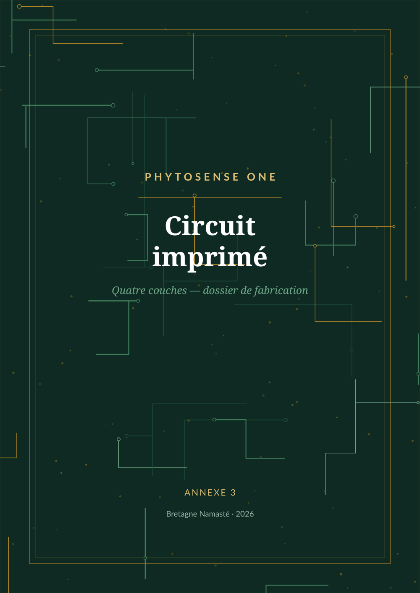

Quatre couches, cent par soixante millimètres, FR4 de 1,6 mm, cuivre de 35 µm, finition ENIG. Ce fascicule contient les planches de routage au format paysage et le dossier de fabrication. Les explications figurent au chapitre 8 de l'ouvrage.
1. L'anneau de garde entoure l'entrée sur les quatre couches. 2. Le vernis est épargné dans la zone d'entrée, et cette option doit être demandée explicitement au fabricant. 3. Aucune piste ne franchit la fente du plan de masse — une seule suffirait à annuler l'isolement sans empêcher la carte de fonctionner.


| Paramètre | Valeur |
|---|---|
| Nombre de couches | 4 |
| Dimensions | 100 × 60 mm |
| Épaisseur | 1,6 mm |
| Cuivre | 35 µm (1 oz), toutes couches |
| Matériau | FR4 Tg 150 |
| Finition de surface | ENIG (or chimique sur nickel) |
| Vernis | vert, deux faces — ne pas modifier les ouvertures |
| Sérigraphie | blanche, deux faces |
| Percements | traversants uniquement, 0,30 mm minimum |
| Classe | IPC 2 |
| Test électrique | oui |
| Fichier | Contenu |
|---|---|
| F_Cu · In1_Cu · In2_Cu · B_Cu | les quatre couches de cuivre |
| F_Mask · B_Mask | vernis épargné, y compris la zone d'entrée |
| F_Silkscreen · B_Silkscreen | sérigraphie |
| Edge_Cuts | contour |
| phytosense.drl | percements |
| top-pos.csv | positions pour placement automatique |
Dessin publié sous licence CERN-OHL-P v2. Révision B, septembre 2026. Bretagne Namasté — bretagne-namaste.com — contact@bretagne-namaste.com